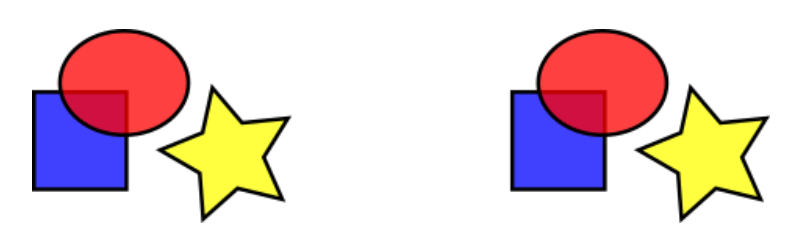

10. Векторные рисунки
Краткие теоретические сведения
Задание к работе
-
Прочитайте и повторите действия из Inkscape tutorial: Основы.
-
Создайте пустой документ и сохраните его. Откройте сохраненный файл и откройте его в текстовом редакторе. Найдите в нем информацию о размере рисунка. В inkscape откройте редактор XML («Правка–Редакторы XML»). Сравните данные в редакторе с данными в текстовом файле.
-
Добавьте на рисунок прямоугольник. Какие изменения произошли в XML разметке?
-
В редакторе XML установите размеры прямоугольника 10 на 10. Скопируйте его и вставьте в Word. Увеличьте изображение в 10 раз. Что произошло с рисунком? Скопируйте прямоугольник еще раз и вставьте его в Word как векторный рисунок («Главная–Вставить–Специальная вставка–Метафайл Windows»). Увеличьте изображение в 10 раз. Что произошло с рисунком?
-
Повторите в inkscape рисунок, приведенный ниже.

Сохраните его в растровом формате и экспортируйте его в векторный формат (с различными разрешениями). Сравните размеры файлов. Сравните удобство и качество получаемых рисунков при вставке их в Microsoft Word.